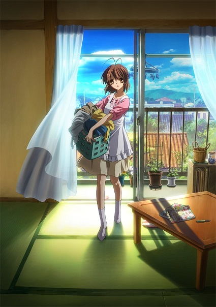
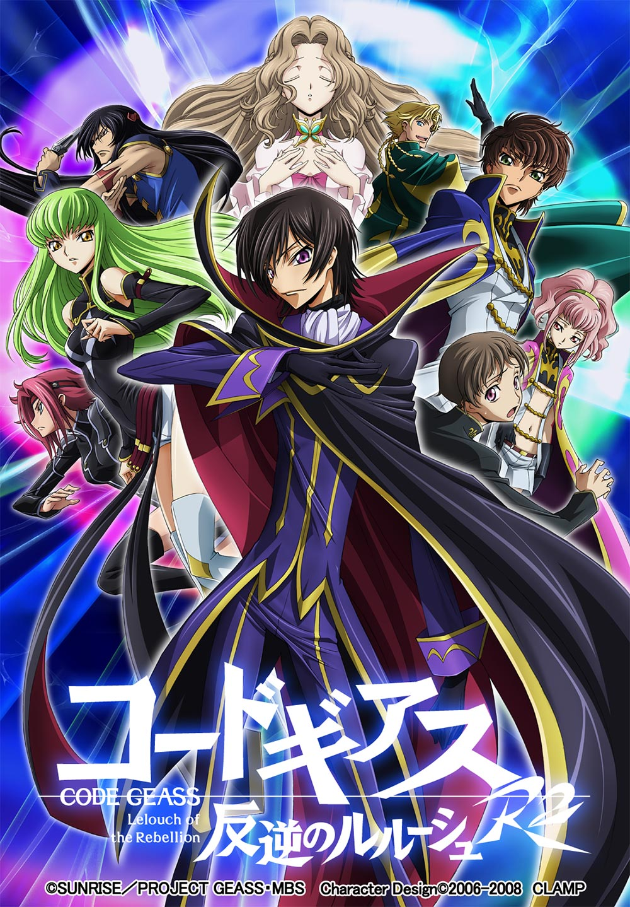
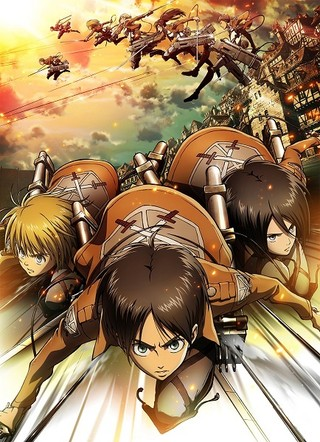
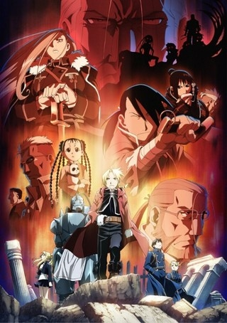
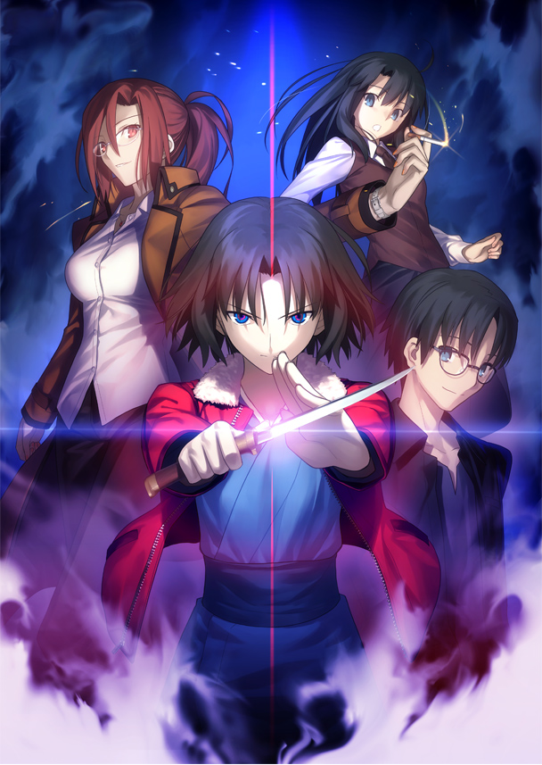
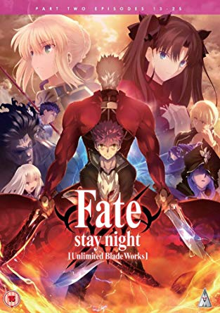
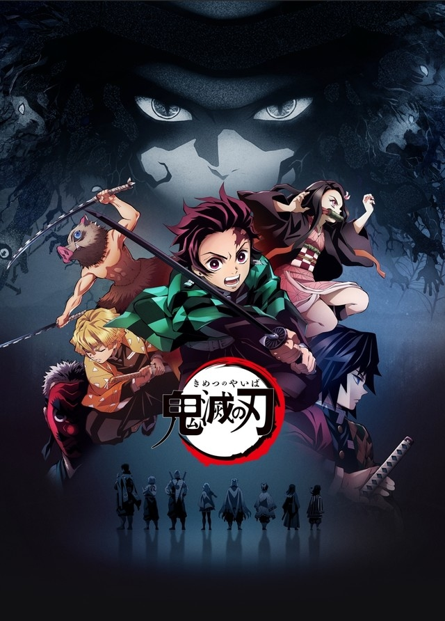
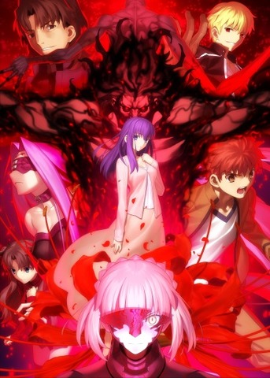
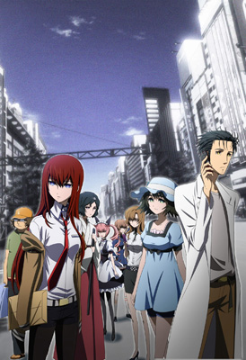

第１０位：CLANNAD AFTER STORY(2008年)

第10位はCLANNAD AFTER STORYです！
泣けるアニメとして非常に有名ですよね。
CLANNADの２期にあたる物語で、2008年に京都アニメーションが制作しました。
不良で家庭環境に恵まれない男子高生の「岡崎朋也」と、生まれつき病弱で優しい女子高生の「古河渚」を中心とした物語で、2人が様々な人と出会い、困難を克服していく中で惹かれ合い、自分たちの人生を歩んでいく、というストーリーです。
この作品の最大の特徴は、朋也と渚の人生を描いているという点につきます。
「CLANNADは人生」というネットの有名な格言がありますが、この言葉は冗談でもなんでもなく、この作品を一言で表したフレーズです。
高校生の男女が出会い、惹かれあっていき、最終的に結ばれるというストーリーのアニメ作品は非常に多いですが、その先の人生を描いている作品はCLANNAD以外ではほとんど見たことがありません。
高校を卒業し、就職し、家庭を持ち、子を養い、様々な人に支えられながら生きていく様を、この作品は非常にリアルかつ感動的に描いています。
そして何と言っても、京都アニメーションの高い技術が本当に素晴らしいです。ヒューマンドラマテイストのアニメ作品をここまで高クオリティかつ感動的に作ることができる制作会社は京アニ以外には存在しないのではないでしょうか。
特に人物の表情の表現が素晴らしいです。そのキャラクターの心情が、表情を見るだけで痛いほど伝わってきます。そして中でも「涙」の表現は群を抜いています。。。
CLANNAD AFTER STORYは誰が見ても楽しめる作品ですが、泣けるアニメを見たいという人には特に見て欲しい作品です！
第９位：コードギアス 反逆のルルーシュ（2006年・2008年）

第9位はコードギアス 反逆のルルーシュです！
もはや説明不要の超傑作ですよね。アニメが好きな人なら多くの方が見ているのではないでしょうか。
2006年にサンライズが制作した作品で、2008年に2期の「コードギアス 反逆のルルーシュ R2」が放送されています。
大国ブリタニアに母親を殺され、妹の「ナナリー」を失明に追い込まれた少年 「ルルーシュ・ヴィ・ブリタニアが、ブリタニア」に反逆するというストーリーです。
この作品は何と言ってもストーリーが本当に素晴らしいです。「魔法少女まどかマギカ」と並んで、オリジナルアニメ史上最高のストーリーだと思います。
練り込まれた設定に主人公ルルーシュを中心とする魅力的なキャラクター、「ナイトメアフレーム」という男子の心を掴んで離さない機体、続きが気になりすぎる引き、などなどストーリーのいいところを話すとキリがありません。
音楽もとてもかっこよく、声優さんの演技もたまりません。ルルーシュ役の福山潤さんの怪演は必見です。
コードギアスは間違いなく誰が見ても楽しめる作品なので、見たことない方にはぜひ見て欲しいです！
第８位：進撃の巨人（2013年〜）

第8位は進撃の巨人です！
制作はWIT STUDIOで、2013に1期、2017年に2期、2019年に3期が放送されました。また、2020年にファイナルシーズンである4期の放送が決定しています。
またしても超有名作品ですみません。。。なんの面白みもないランキングになってますね。。（笑）
進撃の巨人は漫画が本当に面白いですよね。全巻読んでいます。控えめに言っても、漫画史上最高のストーリーになりうる作品じゃないですか？諫山先生は天才です。
進撃は原作が一番という意見もわかりますが、でもやっぱりアニメの出来は最高です。作画クオリティ、音楽、声優、演出、どれをとっても文句のつけようがありません。
漫画原作のアニメ作品で大成功と言えるものは、進撃の巨人と、後述の「鬼滅の刃」の２作品だと思ってます。
アルミン役に井上麻里奈さんを抜擢した方は天才だと思います。合いすぎです。
好きな回は、女型の巨人にアルミン、ライナー、ジャンの３人で立ち向かう回、超大型巨人と鎧の巨人の正体が判明する回、超大型、鎧、獣を打倒する回です。どれも最高でした。
第７位：鋼の錬金術師（2003年・2009年）

第7位は鋼の錬金術師です！！
まじでめちゃくちゃ好きです。原作は何回も読みました。
ハガレンのアニメ作品は２つあります。2003年にボンズによって１作目が制作されましたが、原作がまだ序盤までしか出版されていなかったため、途中からオリジナルストーリーになりました。
そして6年後の2009年に２作目が同じくボンズによって制作されました。正式名称は「鋼の錬金術師 FULLMETAL ALCHEMIST」です。こちらは完全に原作準拠で、アニメの最終回とともに原作が完結するという異例の事態でした。
僕は２作目の方が好きですが、１作目もかなり好きです。漫画原作のアニメ作品をオリジナルストーリーで展開すると大抵目も当てられないものになりますが、ハガレンのストーリーは素晴らしいものでした。
純粋なダークファンタジーさで言えば、１作目の方がクオリティは高いと思います。特に、ホムンクルスの設定が秀逸でした。
両作とも、作画、音楽、演出、声優、OPEDの全てが素晴らしいです。特に主題歌は本当に名曲揃いです。「メリッサ」、「リライト」、「ホログラム」、「ゴールデンタイムラバー」が特に好きですね。
戦闘シーンの作画はさすがボンズです。原作を完璧に再現しています。
(実写映画は見てはいけません)
第６位：空の境界（2007年〜2013年）

第6位は空の境界です！劇場版アニメは例外感がありますが、本当に好きなのでランクインさせてもらいました。
ここからはTYPE-MOON作品が連続します。すみません。。。
空の境界は奈須きのこ原作の伝奇小説で、ufotableが劇場アニメとして映像化しました。７章ある原作をそのまま７章の劇場作品として映像化するという、狂気じみた試みでした。
第１章の「俯瞰風景」は2007年、第７章の「殺人考察 後」は2010年に公開されました。またその後、エピローグにあたる「空の境界 終章」、番外編の「空の境界 未来福音」が公開されました。
物の死が線として見える「直死の魔眼」を持つ少女の「両儀式」と、「黒桐幹也」という青年を中心とした物語で、魔術師や奇怪な能力をもつ人物が登場します。
正直、ストーリーは相当難しいです。原作の小説を読み込まない限りは理解できません。僕も理解しきってはいないと思います。
しかし、この作品はストーリーがあまりわからなくても引き込まれます。それはufotableによる圧倒的な映像表現と梶浦由記氏による魅力的な音楽によるものです。
今現在では、ufotableの技術の高さは、多くのアニメファンの知るところとなっています。Fateシリーズや鬼滅の刃を見れば一目瞭然です。
そんなufotableの名を世に知らしめた作品が、この空の境界です。2007年の作品にも関わらず、そのクオリティはFateシリーズと大差がありません。控えめに言って意味がわかりません。
特に素晴らしいのは背景と戦闘シーンです。背景は写真と見間違えるほどで、夜景の描写が美しいです。
戦闘シーンは全部好きですが、「俯瞰風景」の式と「巫条霧絵」の戦闘の美しさは音楽のかっこよさも相まって最高の出来です。
そして、梶浦由記氏の音楽は空の境界の雰囲気にこれ以上ないほどマッチしています。サントラを聞き込んでいます。
第５位：Fate/zero（2011年）

第５位はFate/zeroです！！
原作は虚淵玄氏による小説で、2011年にufotableによって映像化されました。
奈須きのこ原作のPCゲーム「Fate/stay night」の前日譚で、第４次聖杯戦争を描いた物語です。
今作は、空の境界のクオリティをテレビアニメで実現させるという、目標があったそうですが、見事に達成しています。全話が映画のようなクオリティです。
Fate/zeroの素晴らしいところは、キャラクターが全て魅力的なところです（Fateシリーズ全般に言えることですが）。
魔術師殺しで世界平和を目指す主人公「衛宮切嗣」、いじめられまくりの「セイバー」、まだ純粋な「言峰綺礼」、金ピカ英雄王「ギルガメッシュ」、ヒロインの「ウェイバー」、かっこよすぎる「イスカンダル」、ねちねち「ケイネス先生」、クズの「雁夜おじさん」、などなど、あげればキリがありません。
今作は群像劇なので、全陣営が主人公と言えます。群像劇は登場人物全員が魅力的じゃないと面白くならないですが、Fate/zeroは全キャラが立っていて魅力的なので、どの陣営のシーンも退屈することなく、熱中して見ることができます。
23話は神回です。
第4位：Fate/stay night [Unlimited Blade Works]（2014年）

第4位はFate/stay night [Unlimited Blade Works]です！もう何回見たかわかりません。
Fate/stay nightの通称「凛ルート」を映像化したもので、2014年にufotableによって制作されました。主人公の「衛宮士郎」と、ヒロインの「遠坂凛」のサーヴァントである「アーチャー」を巡る物語です。
クオリティはFate/zeroからさらに進化しています。戦闘シーンは凄まじいの一言です。
Fateシリーズは、奇跡の願望機「聖杯」を巡って７人の魔術師が、過去の英霊であるサーヴァントを召喚し、お互いに殺し合うという、「聖杯戦争」を描いた物語ですが、今作は聖杯戦争を通して主人公の衛宮士郎が追い求める「正義の味方」のあり方を描ききっています。
原作の難しい描写をうまく映像に落とし込み、士郎やアーチャーの葛藤が伝わるように表現されています。
特に、物語に1つの決着がつく20話は、挿入歌も相まって神回です。
しかし僅かながら不満点もあります。少し淡々としているという点です。
原作で最高に盛り上がったシーンが少しさらっと終わるということが何度かありました。
しかしこれは、ゲームをアニメ化する際の限界点なのかとも思います。
それでもこの順位なのは、原作の面白さ、映像クオリティの高さ、キャラクターへの愛着が群を抜いているからです。
第３位：鬼滅の刃（2019年）

第3位は鬼滅の刃です！！ついこの間まで放送されていましたね！
僕はFateシリーズと第1位の作品が本当に好きすぎて、これらを超える作品は今後出てこないんじゃないかと思っていました。
そんな中、ufotableがジャンプ作品をアニメ化するというので見てみると、とんでもなくどハマりしてしまいました。。
研ぎ澄まされ尽くしたufotableの映像技術、王道で理解しやすいストーリー、魅了的すぎるキャラクター、独特かつ痛快な台詞回し、素晴らしい音楽、豪華すぎる声優陣、神曲の主題歌、どれをとっても最高です。
序盤はあまり盛り上がるところはないかもしれませんが、「我妻善逸」といううるさいキャラクターが出てきてからの面白さは尋常ではありません。そこからはどんどんキャラが増えていき、個性豊かな「鬼殺隊」の「柱」でその面白さを確固たるものにしました。
鬼の魅力もこの物語を語る上では欠かせません。鬼も元は人間で、辛い過去を持っていました。鬼となって記憶を無くしたあとでも、無意識のうちに人間の頃の願いを追い求めています。人を食っていることは最低ですが、どこか憎みきれない、同情せざるを得ないという魅力があります。
そしてなんと言っても主人公「竈門炭治郎」の人間性がたまりません。
ある日突然、鬼に最愛の家族を惨殺され、妹の「禰豆子」は鬼になってしまいます。
炭治郎は鬼を討つため、そして禰豆子を人間に戻すために鬼殺隊に入るのですが、その行動原理が単なる復讐ではないというのがポイントです。
炭治郎は本当に優しい少年で、禰豆子を人間に戻すことを最優先にします。悪鬼滅殺！！という訳ではなく、鬼にすら同情し、鬼を討つときには、彼らがもっとも求めている言葉をかけてあげます。
そんな炭治郎の優しさに多くの人が救われていきます。
最近のアニメの主人公で、優しさが根底にあるキャラクターというのは少ないんじゃないでしょうか。
そして相変わらず、作画がとんでもないです。ufotableの進化は計り知れません。原作と比較したら一目瞭然です。特に「鬼血術」と「呼吸」の表現がたまりません。浮世絵をそのまま動かすかのような「水の呼吸」の描写には度肝を抜かれました。。。
19話「ヒノカミ」はアニメ史に残る神回です。超作画、演出、音楽、演技、挿入歌が重ね合わさり、炭治郎と禰豆子の本物の兄弟の絆が、下弦の伍「累」の偽りの家族の絆に打ち勝つ、というシンプルかつ感動的なストーリーを最高なものにしています。20回は見ました。
映画化も決定しています。何回も見に行きます。煉獄さん大好きです。
2期も間違いなくあるでしょう。鬼滅の刃はここから本当に面白くなるので、2期が始まったらこの順位からさらに上がりそうです。。
第２位：劇場版「Fate/stay night [Heaven's Feel]（2017年・2019年）

第2位は劇場版「Fate/stay night [Heaven's Feel]です！！１章と２章合わせて13回見に行きましたね。
「Fate/stay night」の３番目のルート、通称「桜ルート」（以下「HF」）を描いた物語で、制作はufotable、全３章構成で、第１章は2017年10月、第２章は2019年1月に公開されました。第３章は2020年春に公開予定です。
主人公の「衛宮士郎」と、彼を慕う少女「間桐桜」を巡る物語で、これまでの２ルートとは雰囲気が大きく変わり、陰鬱で暗いホラーテイストのストーリーです。
今作は間違いなく、TYPE-MOON史上最高の映像作品です。英霊が描いたとしか思えない作画、梶浦由記氏の壮大な音楽、須藤監督の原作愛に満ちた脚本と演出、ベテラン声優陣の素晴らしい演技。全てがあまりにもハイレベルです。
作画はおそらく、日本の劇場版の深夜アニメ史上No. 1だと思います。背景、表情、エフェクト、戦闘、どれをとっても異次元です。
特に戦闘シーンは驚愕しました。第１章のランサーvs真アサシンと第２章のバーサーカーvsセイバーオルタはちょっと意味がわからないですね。
そして何と言っても、須藤監督の原作理解力です。異常です。
須藤監督は「月姫」の頃からの大のTYPE-MOONファンで、「桜愛好家」です。そんな人がHFの監督をするんなら大丈夫だとは思っていました。
完全になめてました。。。
監督は制作初期、奈須さんから、「HFはそのまま映像化するのは難しいので、オリジナルストーリーにしたほうがいい」と言われたそうです。
そこで監督は、原作をそのまま映像化するべき理由と、その方法を書いた何百ページにも及ぶ文書を奈須さんに提出し、奈須さんを驚愕させたそうです。
須藤監督の、HFにかける想いは凄まじいものでした。
そしてその想いは、作品を見ればわかります。監督の熱意とアイデアが物凄いです。
HFはもともと、映像化困難と言われていました。序盤から中盤が間延びし、グロテスクで性的な描写が多く、そもそも長すぎます。
そんなHFを、須藤監督は全３章の劇場版という構成にしました。しかも、長い原作の重要なところを描くのは当たり前で、原作補完も交えて士郎と桜にフォーカスした、完璧に近い脚本を完成させました。
原作では地の文で描かれるシーンも、「そうきたか！」と言わざるを得ない、驚きの方法で表現しています。
「翻案」とはまさにこのことだと思いました。あまりにも素晴らしい映像化です。一体第３章はどうなってしまうんでしょうか。今から本当に楽しみです！
第１位：STEINS;GATE（2011年）

そして！第1位はSTEINS;GATEです！！！
面白みのない1位ですみません。。でも本当にシュタゲが好きなんです。
STEINS;GATEは2009年に5pbから発売された想定科学アドベンチャーゲームで、2011年、WHITE FOXによってアニメ化されました。
大学生で中二病の青年「岡部倫太郎」は、仲間たちとともに過去にメールを送れるシステム「Dメール」を作り上げる。岡部たちはDメールを使って過去改変を繰り返すが、やがて取り返しのつかないことになっていく。というストーリーです。
今作は、アニメ史上最高のストーリーだと思っています。タイムトラベルを扱う作品は数多くありますが、タイムトラベルを、めちゃくちゃながらも論理的に落とし込み、設定に矛盾がない作品は今作くらいなものでしょう。
また、伏線回収が凄まじいです。序盤に張りまくった伏線を、後半で全て完璧に回収していきます。最終回後に残るモヤモヤは一切ありません。
キャラクターも本当に魅力的です。初めは中二病が痛すぎてかっこよさのかけらもないのに、後半ではなぜかかっこよすぎる主人公「岡部倫太郎」、ヒロインにも関わらずねらーの天才変態少女「牧瀬紅莉栖」、スーパーハカー「橋田至」、コスプレ大好き幼馴染「椎名まゆり」、謎多きバイト戦士「阿万音鈴羽」。
どれも本当に魅力的なキャラクターです。
特に岡部と紅莉栖が本当に好きです。シュタゲは基本的にこの2人の関係を描く物語だと思っています。初めは口喧嘩ばかりしていた２人が、次第に互いの優しさに触れ、絶望的な状況の中で支え合い、かけがいのない存在になっていく様がたまりません。
岡部倫太郎は、僕が一番好きな主人公です。中二病で痛すぎる男ですが、誰よりも優しい心の持ち主で、そして誰よりも仲間思いなやつです。
岡部は基本的に一般人で、陰謀や闇とは無関係でした。しかしひょんなことから、壮絶な物語の中心に立つようになります。
視聴者と岡部の目線や感覚は一緒なので、心の底から岡部に感情移入できます。彼の抱く悲しみ、苦しみ、喜び、葛藤を、アニメを見ることで、理解し、体験できます。こんな作品は他にはありません。
そして視聴者は、物語終盤、彼の「漢気」に胸を打たれます。かけがいのない存在のために自身の全てを懸ける岡部の姿は、涙なくしては見られません。
主題歌も素晴らしいです。どれも物語の核心をつく歌詞ですね。「スカイクラッドの観測者」が特に好きです。
9話、14話、22話、23話、24話は神回です。特に23話はやばいです。最高です。エル・プサイ・コングルゥ。
いかがだったでしょうか。普通すぎて面白みのないランキングになってましたね。。。
まだまだ本数が少ないので、これからもっと作品を見ていきたいと思います！！